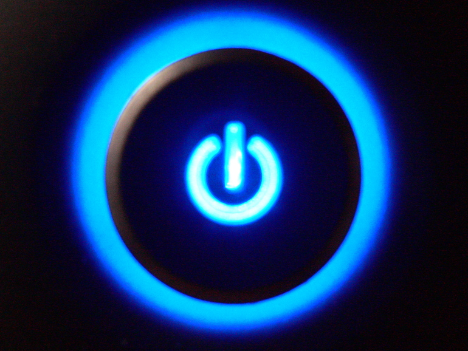
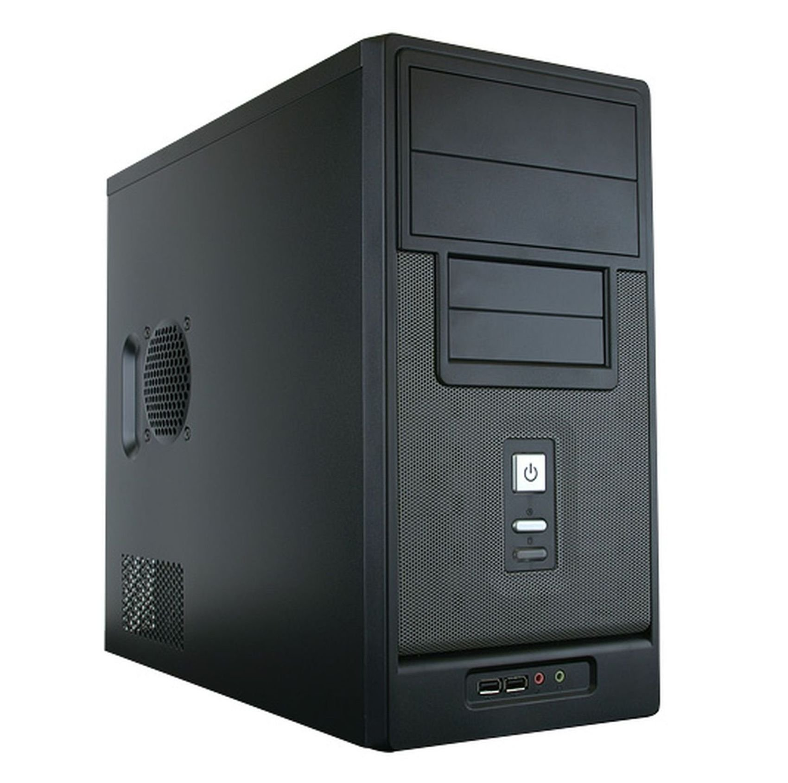
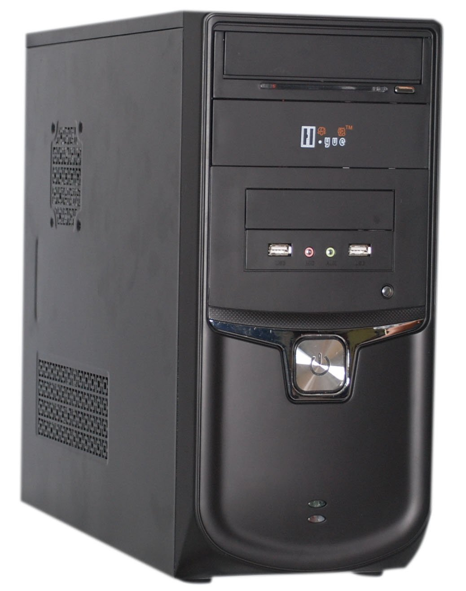
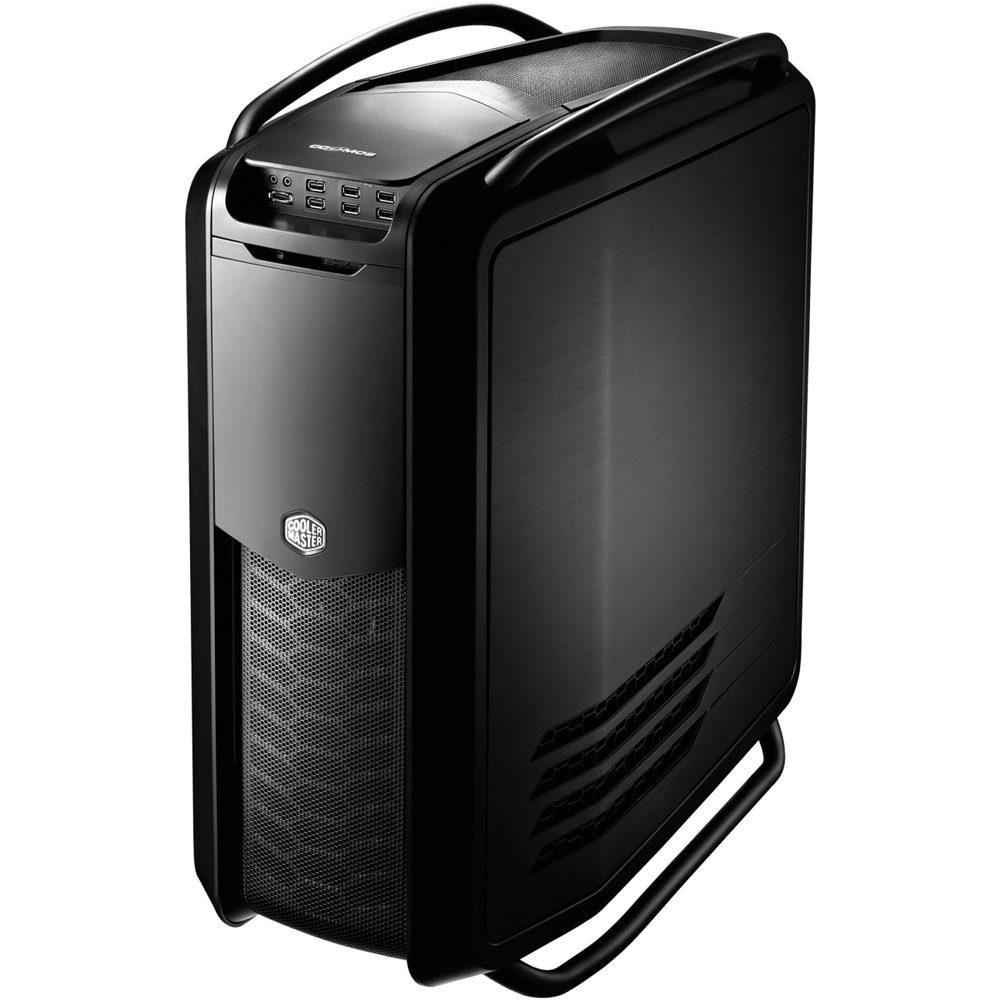
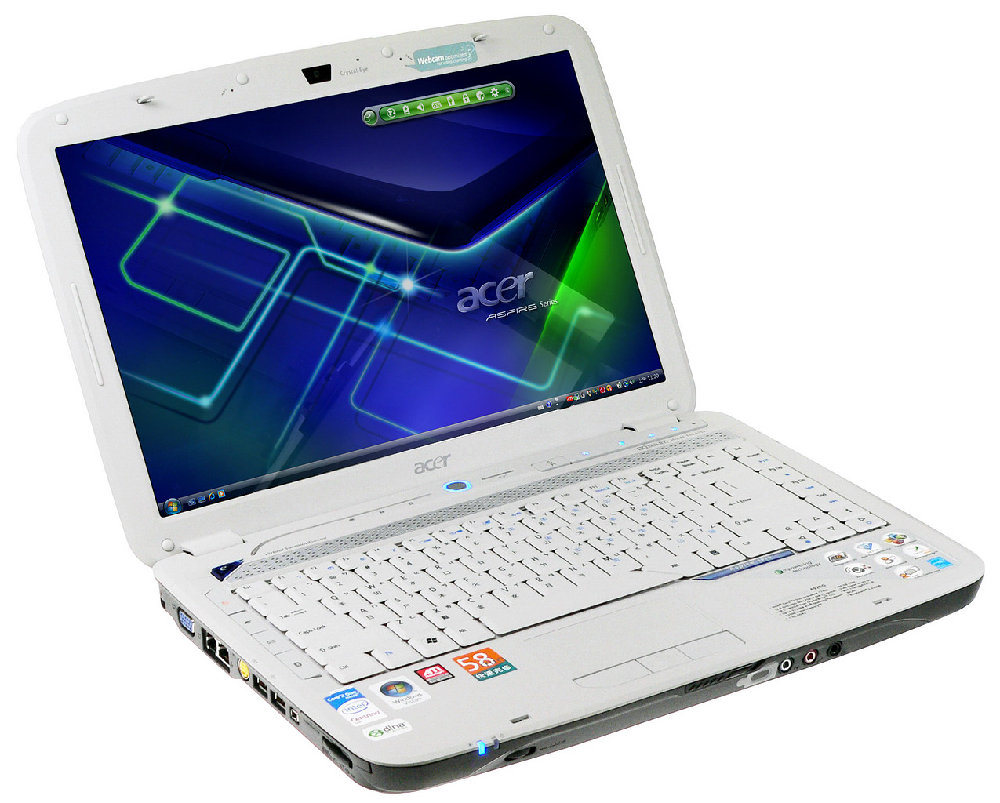
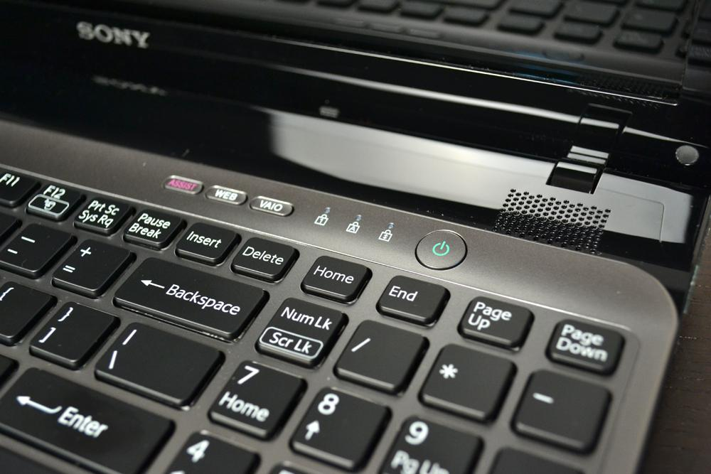
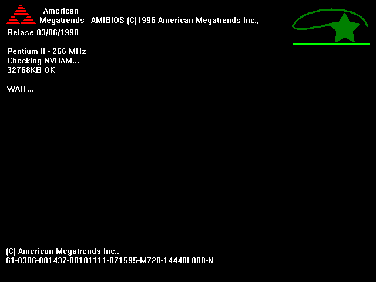
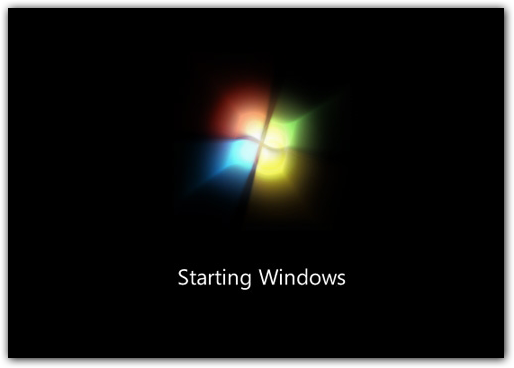
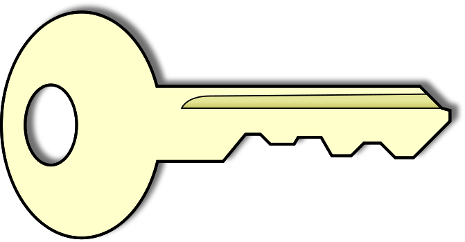
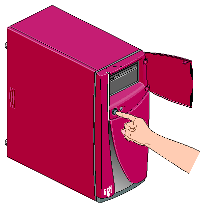

Iniciación a la informática e Internet
Ordenadores UJI
Veamos para empezar la operación de encender/apagar el ordenador, y la utilización del usuario/contraseña que nos proporciona la UJI para poder acceder a los equipos.


Operación básica de todos los equipos, en las que interviene un botón.
- El botón debe pulsarse y soltarse, sin mantenerlo pulsado.
- Al pulsarlo, alimentamos todos los componentes del ordenador haciendo posible su arranque.
¿Dónde está el botón de encendido?

¿Dónde está el botón de encendido?

¿Dónde está el botón de encendido?

¿Dónde está el botón de encendido en un portatil?

Muchas veces tendremos que buscarlo


Desde que pulsamos el botón de encendido hasta que podemos empezar a trabajar pasa un intervalo de tiempo en el que interviene el llamado proceso de arranque.

-
Comprueba el correcto estado de los componentes del ordenador.
Si algún componente esencial no funciona, el ordenador no arrancará.
-
Carga el sistema operativo.
Será nuestro interlocutor con el ordenador, como veremos a lo largo del curso.
-
Nos aparece el escritorio, o la pantalla de validación de usuaio.
La cuenta de usuario/a UJI

En los ordenadores UJI la cuenta de usuario es muy
importante, ya que nos dará acceso tanto a la utilización
de los ordenadores como a Internet.
La cuenta de usuario/a UJI
-
Nos la proporcionan en el momento de realizar la matrícula.
-
El identificador tiene la siguiente forma: alXXXXXX. Ejemplo: al004260
-
Tiene asociada una contraseña: Personal e intransferible.

Podemos apagar el equipo de 2 maneras:
- Pulsando y soltando el botón de encendido. Si el ordenador es moderno y está bien configurado se apagará.
- Desde el sistema operativo, en el botón de Inicio de Windows tenemos la opción de Apagar el equipo. Para ello necesitaremos saber utilizar el ratón.